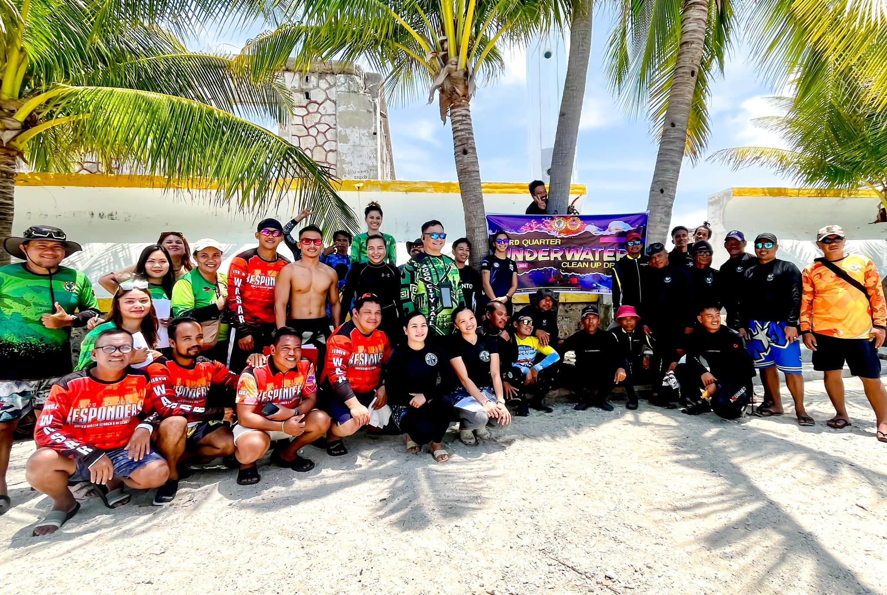
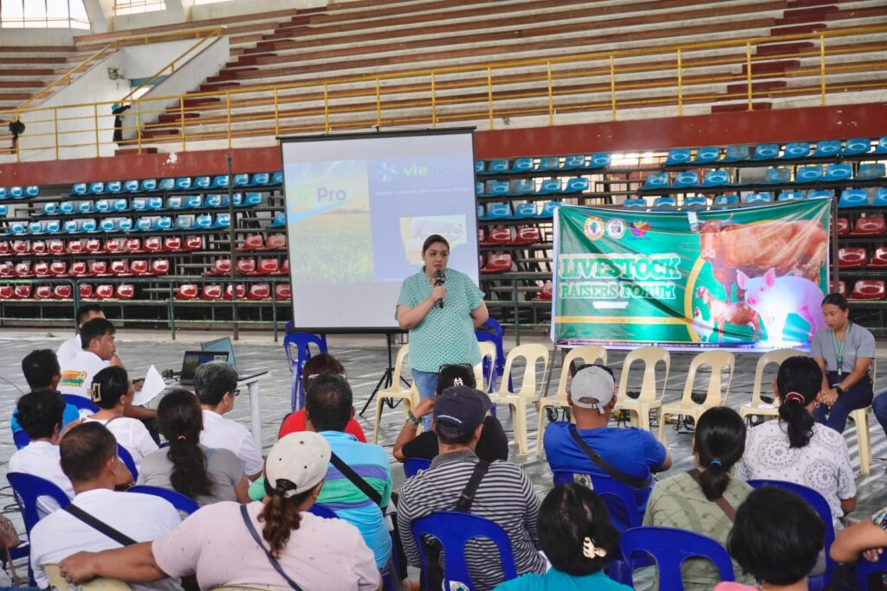

In the City's continued commitment to safeguard its rich marine biodiversity, the 3rd Underwater Clean-up Drive at the Capitancillo Islet Marine Sanctuary
Read More
Announcement from the City Mayor
"This decision came easy for me tungod kay ever since nagkakuyog mi ni Gov. og trabaho adtong 2019, si Gov. Gwen has been really welcoming gyud sa akoa."
Posts
Events and Announcements

3rd Underwater Clean-up Drive to
Protect Capitancillo
Islet Marine Sanctuary Conducted

City Continues Incentives for
Seniors celebrating 80th
and 90th Natal Day
The City of Bogo continues to honor senior citizens on their milestone birthdays. The birthday honorees were greeted with warm smiles and heartfelt congratulations
Read More

Livestock Raisers Forum Highlights
Insurance,
Biosecurity, and Feed Enhancers
A comprehensive Livestock Raisers Forum was hosted by the City Government of Bogo geared with the City's aim at addressing critical issues facing local livestock raisers.
Read More
Bogo City Expands Livelihood
Program,
for ReRe Graduates with Hydroponics Initiative Location
Bogo City, Philippines In the expansion of the Rehabilitation and Reintegration Program (ReRe) Bogo City has introduced hydroponics.
Read More
City of Bogo Farmers Agriculture
Cooperative Receives Digital Corn
and Rice Mill and Generator Set Location
Cebu City, Philippines The City of Bogo Farmers Agriculture Cooperative was awarded a state-of-the-art.
Read More
Agriculture Office Distributes
Fishing Gear
and Farm Inputs to Support Local Farmers and Fishermen
City of Bogo, Philippines In a significant boost to local agriculture and fisheries, the City.
Read More
BOGO SCHOOL INVITED IN CESAFI
TOURNAMENT 2022
The City of Bogo Science & Arts Academy joins CESAFI as guest team! The CBSAA Trailblazers are one of the basketball teams.
Read More
Inclusive nga 5 ka ektarya nga
cemetery gi-groundbreak sa atung Dakbayan
Kining pasilidad gitagana nga magamit alang sa mga Bogohanons nga mahal ta sa
Read More
CBMS GILUNSAD SA DAKBAYAN SA
BOGO
Nagpahigayon og Roadshow ang mga CBMS Enumerators, Team Supervisors ug Area Supervisors kauban ang mga empleyado
Read More